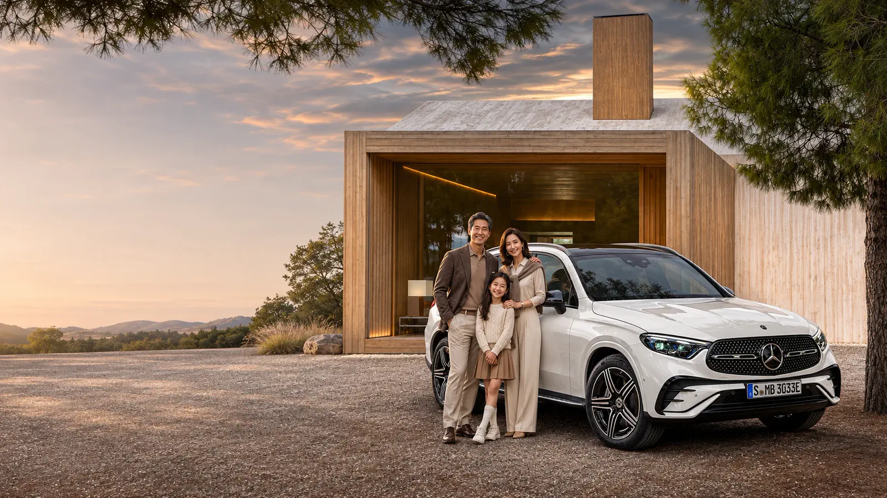

리어 액슬 스티어링
저속에서는 더 민첩하게, 고속에서는 더 안정적으로. 뒷바퀴 조향 움직임을 확인해 보세요.

가장 완성도 높은
프리미엄 가솔린 SUV
258마력의 여유로운 출력, 48V 마일드 하이브리드, Mercedes-Benz 특유의 정숙성까지.
패밀리 SUV와 비즈니스 SUV를 모두 만족시키는 가장 균형 잡힌 GLC.
우아한 AVANTGARDE부터 역동적인 AMG Line까지. 당신의 취향에 맞는 디자인을 선택하세요.
이미지를 불러오지 못했습니다.
GLC 300 4MATIC AVANTGARDE
이미지를 불러오지 못했습니다.
AVANTGARDE와 AMG Line, 두 가지 분위기의 실내를 사진으로 확인해 보세요.
이미지를 불러오지 못했습니다.
취향에 맞는 시트 컬러를 선택하고 실내 분위기를 비교해 보세요.
이미지를 불러오지 못했습니다.
움직임에 담긴 정교함부터 매일 마주하는 편의까지. GLC 300의 기술을 눈으로 경험해 보세요.
2027년형 AMG Line에 적용된 두 가지 섀시 기술을 별도로 살펴보세요.
저속에서는 더 민첩하게, 고속에서는 더 안정적으로. 뒷바퀴 조향 움직임을 확인해 보세요.
노면 충격을 다루는 방식과 차고 조절 개념을 단계별로 확인해 보세요.
신규 섀시 기술 2종은 AVANTGARDE 미적용. 애니메이션은 원리 이해를 돕기 위한 시각화이며 실제 차량의 속도·회전반경·차고 제어값을 재현한 계측 자료가 아닙니다.
사고 예방부터 충돌 보호, 사고 이후 구조까지 — 4단계 통합 안전을 확인해 보세요.
GLC 300은 2027년형, X3와 Q5는 2026년 국내 판매 모델 기준입니다. 카테고리를 눌러 제원과 기본·선택 사양을 비교해 보세요.
AVANTGARDE와 AMG Line의 기본 적용 옵션과 차이점을 직접 확인해보세요.